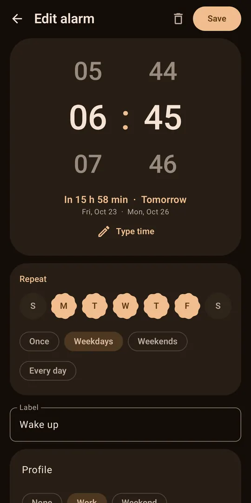
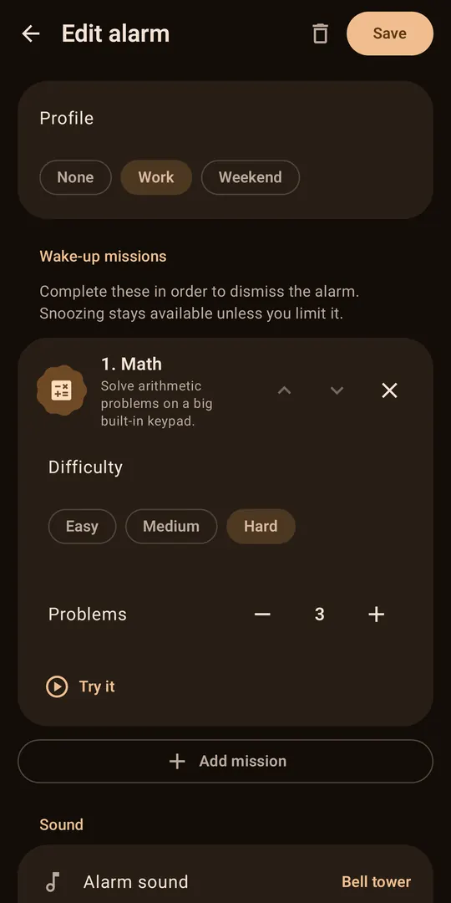
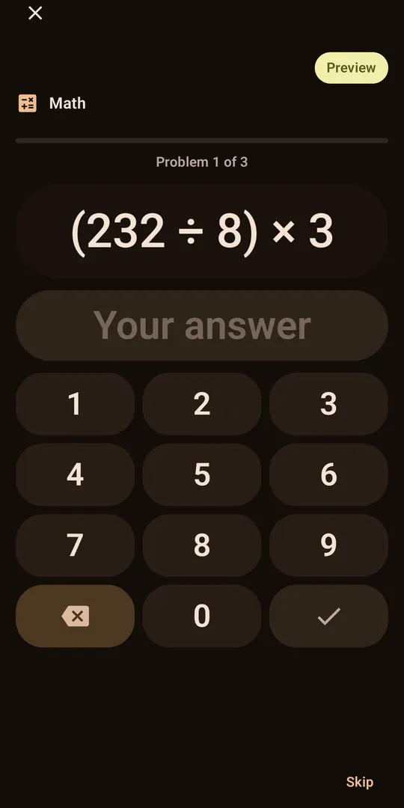
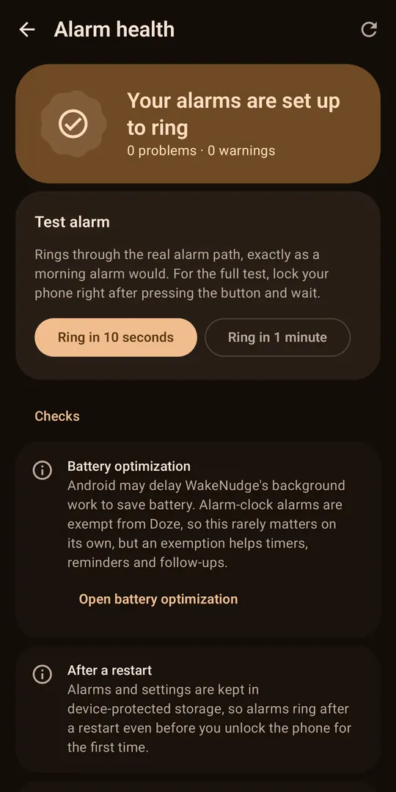
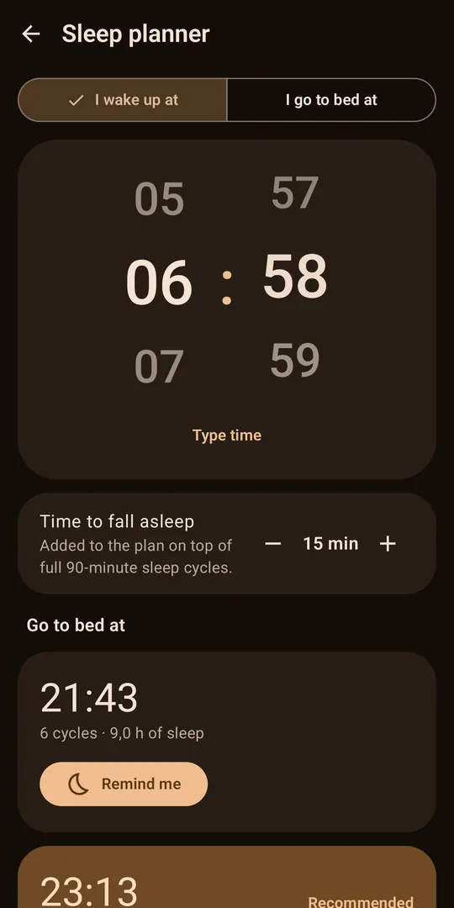
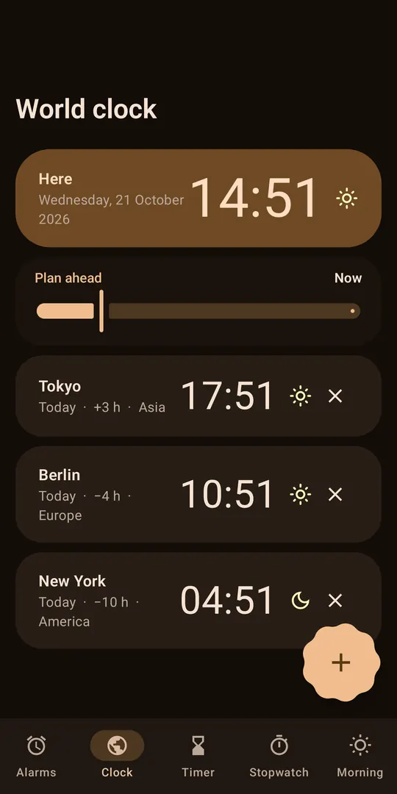

An alarm clock that makes sure you are actually up
Most alarm apps stop at a loud sound. WakeNudge adds the parts that matter for heavy sleepers, shift workers and anyone who has slept through an alarm, and keeps an exit open so it can never lock you in.
Rings when it should
Exact alarms through Android's alarm-clock API, on the alarm audio stream, with a full-screen ring screen over the lock screen. Built to survive restarts, app updates, time-zone and daylight-saving changes.
Wakes your brain, not just your ears
Ten wake-up missions, including scanning a QR code or tapping an NFC tag placed away from your bed. Chain several, preview them first, and pick the difficulty.
Private by design
No ads, no accounts, no analytics, no tracking. Your alarms stay on your phone, and the Play Store build has no network permission at all.
Ten wake-up missions
Complete them in order to dismiss the alarm. Each alarm can use one or several, with its own difficulty and count. Anything a particular phone cannot do (no camera, no step sensor) shows a Continue button rather than blocking you.
Math
Solve arithmetic problems on a big built-in keypad. Easy, medium or hard.
Memory
Watch tiles light up, then repeat the pattern as it grows.
Typing
Type a phrase exactly as shown.
QR code or barcode
Scan a code you registered somewhere away from your bed, such as in the bathroom or kitchen.
Camera
NFC tag
Tap an NFC tag you placed somewhere away from your bed.
NFC
Shake
Shake your phone until the counter is full.
Accelerometer
Steps
Walk a number of steps, counted on the phone.
Step counter or motion sensor
Squats
Do squats while holding the phone against your chest.
Accelerometer
Puzzle
Slide tiles into order, find the numbers one to N, or trace a pattern.
Photo
Go to a place you photographed the night before and point the camera at it. Matched on your phone, nothing is uploaded.
Camera
Built so you do not fall back asleep
- Still-awake check. After you dismiss, WakeNudge asks "Still awake?" a few minutes later. If you do not answer in time, it rings again, up to a limit you choose. It survives restarts and you can cancel it.
- Loud when it needs to be. Extra Loud mode, a volume ramp of up to ten minutes, and a sound that intensifies after about 40 seconds without any interaction.
- Backup alarm. If nothing happens, a separate backup alarm rings again later. It is stored on the device and re-armed after a reboot or an app update.
- Anti-oversleep controls. Snooze limits that can shrink, hold-to-dismiss, protection against accidental dismissal, and an optional lock on last-minute edits.
An exit that always works
Every one of those restrictions can be bypassed with the Emergency stop, a press-and-hold button on the ring screen. A mission is never allowed to become a trap. Hearing safety is built in too: a configurable volume cap on headphones, and the system alarm volume is put back afterwards.
See it in action
Screenshots from a Pixel 6 Pro in dark theme. WakeNudge also has light and AMOLED themes and follows your wallpaper colours with Material You.
Your alarms and profiles 
Alarm editor 
Choose and chain missions 
The math mission Lock-screen ring screen 
Alarm Health and test alarm 
Sleep planner 
World clock
Everything else it does
Alarm Health
A built-in checkup for notifications, full-screen alerts, exact alarms, battery restrictions, Do Not Disturb and audio routing, with a shortcut to fix each, and a real test alarm.
Flexible schedules
Unlimited alarms with labels and repeat days, profiles such as Work and Weekend, skip next ring, vacation mode, holiday and calendar exceptions.
Sleep planner and bedtime
Work out a wake-up time or a bedtime from 90-minute sleep cycles, with bedtime reminders.
Clock tools
Timer, stopwatch with laps, world clock, a live countdown to your next alarm, three home-screen widgets and a Quick Settings tile.
Sounds
12 bundled tones, from gentle to loud, or your own music, strong vibration patterns (or record your own rhythm), spoken announcements with your phone's offline text-to-speech, and a sunrise mode that brightens the screen gradually.
Backup and restore
Save alarms and settings to a JSON file you choose, preview it, and restore it on a new phone. Nothing is uploaded.
Material You design
Dynamic colour, light, dark and AMOLED themes, large-text and right-to-left support, TalkBack labels, and navigation that adapts to bigger screens.
Open source
Kotlin, Jetpack Compose and Material 3 under the Apache License 2.0, with a large automated test suite. Read the code, build it yourself, or send a fix.
Honest about what an alarm app can and cannot do
WakeNudge uses the system alarm-clock APIs, a foreground service and a lock-screen ring UI. It re-arms everything after a reboot, an update, a time-zone change or a daylight-saving jump, and keeps a watchdog that re-checks your alarms every few hours.
It cannot override the operating system. A phone that is switched off will not ring, and some manufacturers restrict background apps aggressively. So far it has been verified on one physical device, a Pixel 6 Pro on Android 17. The testing notes list exactly what was and was not tested on hardware. Please run the test alarm on your own phone.
Privacy: two builds, stated plainly
No accounts, no ads, no analytics, no crash reporting, no tracking SDKs. Alarms, history and settings are stored only in the app's private storage on your phone. Permissions such as camera, step counter and calendar are requested only when you use the feature that needs them.
| Build | Network permission | What it does online |
|---|---|---|
| Google Play (in preparation) | None. The build fails if one ever appears. | Nothing. |
| APK from GitHub Releases | INTERNET only. | An update popup that checks GitHub at most once a day for a newer release. It sends nothing about you or your alarms, and you can switch it off in About, then Updates. |
Read the full privacy policy and the list of every permission and why it exists.
Download WakeNudge
Latest release (APK): every release on GitHub includes a signed WakeNudge-<version>.apk for direct install, the .aab bundle, the R8 mapping file and a SHA256SUMS.txt to verify your download.
To install, open the file on your phone and allow "Install unknown apps" for your browser or file manager when Android asks. To check it first:
sha256sum -c SHA256SUMS.txt --ignore-missingGoogle Play: the listing is being prepared and is not published yet. This page will link to it when it is live. Requires Android 8.0 (API 26) or newer.
Frequently asked questions
Is WakeNudge really free and open source?
Yes. It is released under the Apache License 2.0, with no ads, no subscription, no in-app purchases and no account. The full source code is on GitHub.
Is WakeNudge really offline?
The alarm clock itself never needs the internet. The Google Play build, once it is published, declares no network permission at all, and the build fails if that ever changes. The APK on GitHub holds only the INTERNET permission, used for a small update popup that checks GitHub at most once a day to see whether a newer release exists. It sends nothing about you or your alarms, and you can switch it off in About, then Updates.
Will the alarm ring if my phone is switched off?
No app can ring a phone that is powered off. If the phone was off when an alarm was due, WakeNudge rings straight away on start-up if the alarm was due within the last 10 minutes. Otherwise it records the alarm as missed and shows a notification.
Does it work on Samsung, Xiaomi, OnePlus and other phones?
WakeNudge uses Android's standard alarm-clock APIs, but it has only been tested on a Pixel 6 Pro running Android 17. Some manufacturers add battery managers that can restrict background apps. Open Alarm Health in the app, follow its fixes, ring the test alarm with your screen locked, and report what happens on your phone.
I am a heavy sleeper. What should I turn on?
Use a mission that gets you out of bed, such as scanning a QR code or tapping an NFC tag placed away from the bed, or walking steps. Turn on the still-awake check, Extra Loud mode and the volume ramp, limit snoozes, and keep the backup alarm on. No app can guarantee a wake-up, so also run the test alarm once.
Can a mission trap me?
No. Every restriction can be bypassed with the Emergency stop, a press-and-hold button on the ring screen. A mission that cannot be done on your phone, for example because there is no camera or permission was refused, offers a Continue button instead.
How do updates work?
The GitHub APK shows a popup when a newer release exists, and you install it yourself from the release page. You can turn the check off in About, then Updates. The Google Play build has no update code, so Google Play will update it once it is published.
Which Android versions are supported?
Android 8.0 (API 26) and newer. It has been verified on a physical device only on Android 17, so older versions are covered by tests but not yet by hardware.